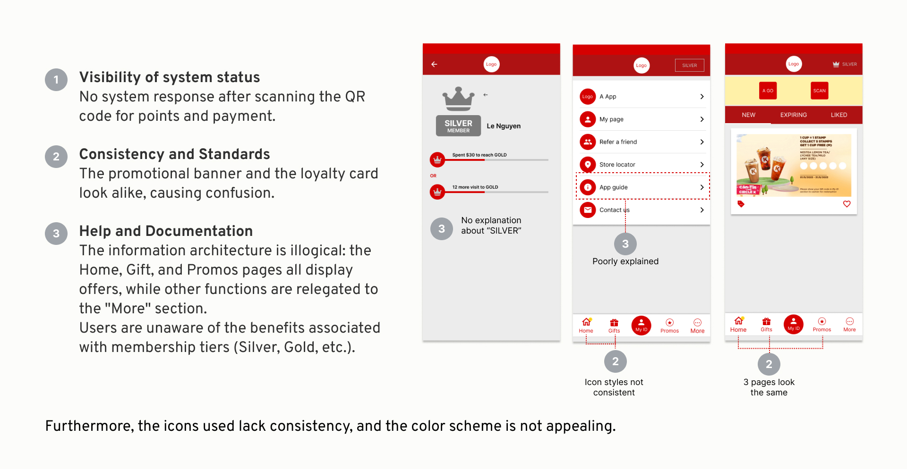
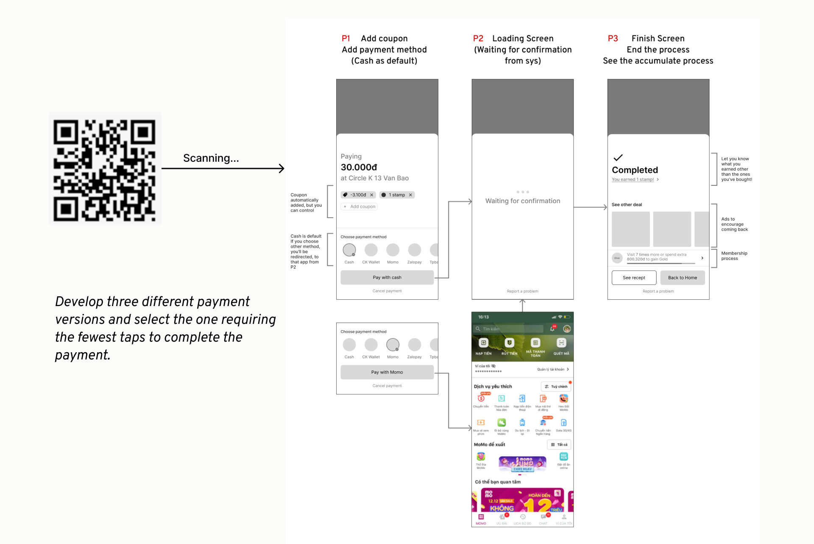
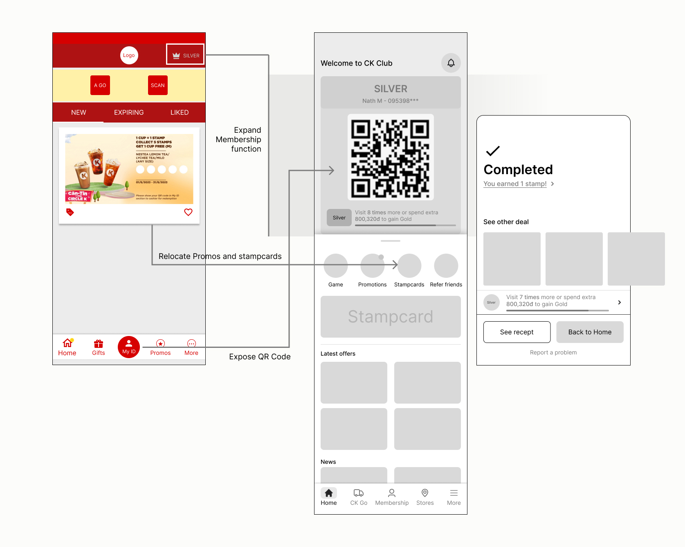
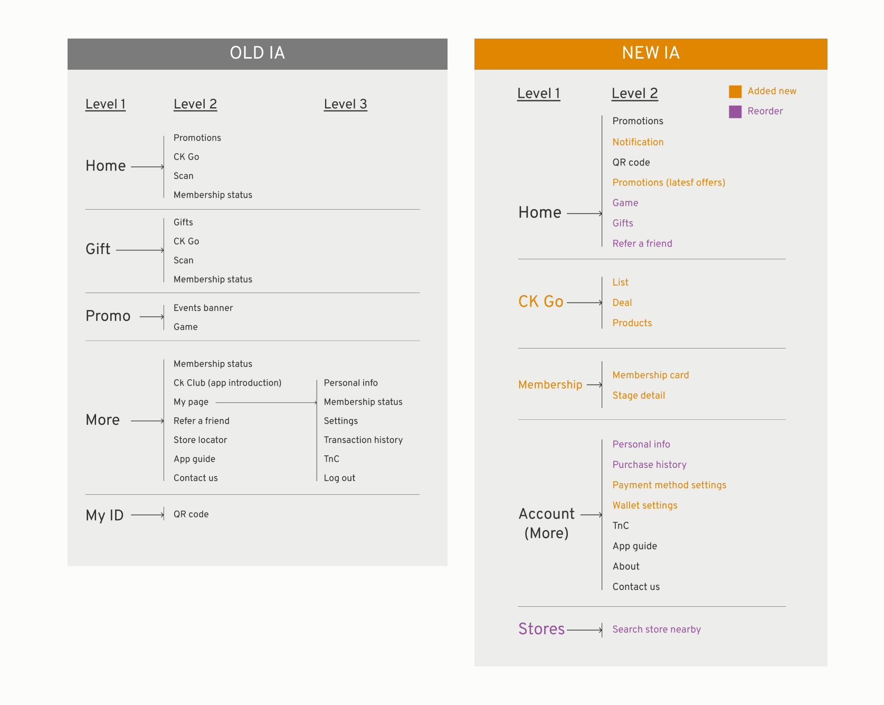
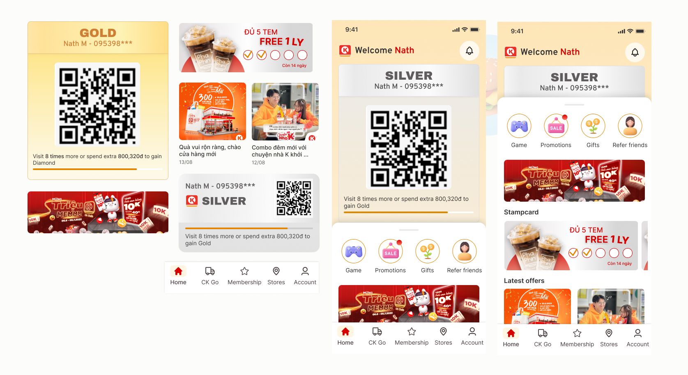
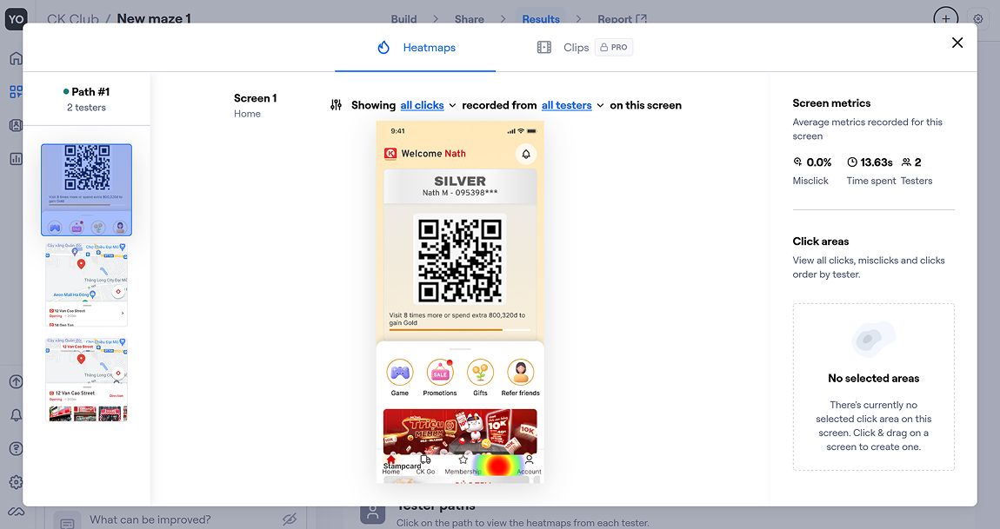

Redesigning Circle K's Loyalty App Fixing Accessibility and Usability
A loyalty app with bad ratings
CK Club is the loyalty app for Circle K, one of Vietnam's largest convenience store chains, but had a sadly low score on app store: 1.8/5 stars. I had CK Club in my phone for a long time, and I can understand why the app earned a bad rating.
The problems aren't about missing features. As a product designer, I wanted to dig into why the app struggles at something this basic, and redesign around fixing the issues doing the most damage to usability.
Individual customers that visit Circle K regularly. Customers who care about deals and promotions, those who are sentisive to price and want to make the most from their purchases.
App domain
Loyalty, Commercial
Customers use app for:
Track loyalty points, track purchase history, find store locations, find discount deals
Company uses app for
Keep loyal customers, increase impression for partner's campaigns
With the effort to make the app friendlier for their loyal users, I redesigned flows and screens to solve the problem through my research.
What I do in this project
I played the role of a solo product designer, and tried to do the full process from research to final solution. These are the summary of the steps I perfomed in this project.
What problems users are facing while using CK Club?
To have the answer, I walked in a few stores nearby to obserse how people are bringing app into their purchasing process, and performed a quick interviews with customers with app.
| Metric | Result |
|---|---|
| CK Club usage rate among observed transactions | 22.5% |
| Avg. checkout time with CK Club | 25.5 seconds |
| Avg. checkout time without CK Club | 14.2 seconds |
| Payment via e-wallet/transfer (CK users) | 60% (3 of 5) |
| Payment via e-wallet/transfer (non-CK users) | 47% (8 of 17) |

Ideate solutions for accessibility and usability problems
The system does not respond after scanning the QR code. 4 out of 7 users found the app slow during payment, with one noting they had to open and wait for it to reload each time. This slowed down both the user and the queue behind them. Average load time was 7.7 seconds, ranging from 4 to 16 seconds.
→ I created a new flow to keep the flow consistent, reducing time on task.

The stamp-for-reward program was the only feature that kept users engaged — it had a clear, concrete goal. In contrast, 7 of 7 users did not know what the membership tier system was for or what benefits their tier offered.
→ Display points and rewards program.

100% of interviewed users did not know the app had a store locator or transaction history — and assumed those features didn't exist. The app also lacks an in-app notification tab, so points updates and payment confirmations are never surfaced.
→ Conduct card sorting to redesign the app's information architecture.

From findings to a redesigned flow
Each finding was mapped directly to a UI fix, so the payment flow, points display, and hidden features all had a clear reason behind their new design rather than a cosmetic refresh. The information architecture was rebuilt first, using the card sorting results, so navigation matched how users actually grouped features instead of how the original app organized them. From there, I referenced patterns from other loyalty and payment apps to keep the new screens familiar, so users wouldn't need to relearn basic interactions on top of everything else that changed.

I created a prototype to test the final version.
To verify the new version I designed, I created a prototype and use Maze to send to my friends. I asked them to perform 3 tasks:
1 - Find the nearest store
2 - Complete a purchase and earn points
3 - Find your latest order
4 - Find out your Ranking and tell what you can do with points

The retention problem was really a trust problem.
Users weren't disengaged — they were uncertain. They didn't know if the app was working, didn't know what they were earning, and couldn't find the features that might have made it worthwhile.
The drop-off wasn't about the reward program being weak. It was about the app failing to communicate its own value at every touchpoint. Getting the checkout flow and home screen right isn't UX polish — it's the design doing what the product was built to do.
Next: usability testing on both the current app and the redesigned prototype, comparing task completion time, steps, and error rates — with focus on checkout friction and feature discovery.